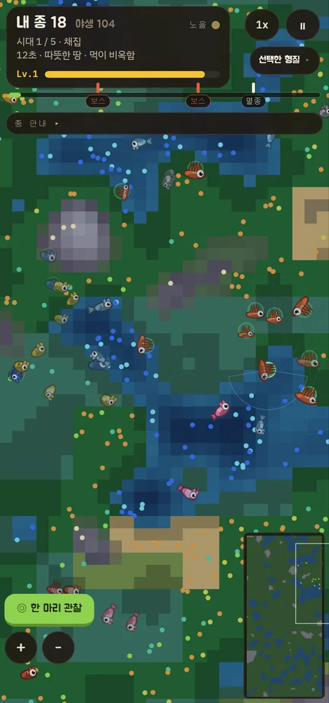
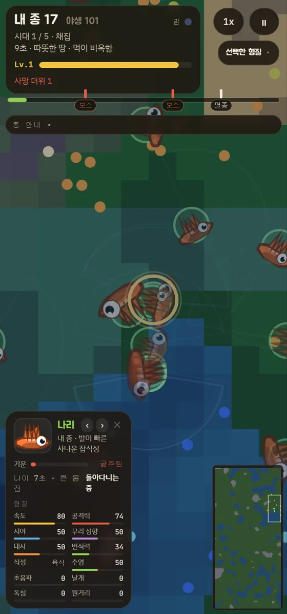
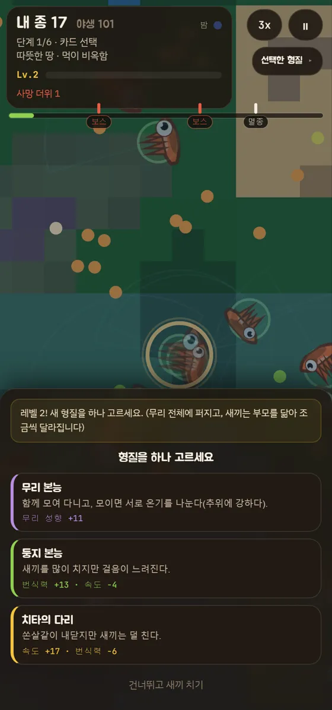

적자생존
한 종을 길러 생태계의 정점에 올리세요.
카드를 골라 형질을 키우고, 무리가 살아남는 것을 지켜보세요.
무료 · 브라우저 · 설치 없음
ONE RUN
채집, 보스, 그리고 대멸종.
채집
무리가 스스로 먹고 번식합니다. 먹이가 곧 경험치, 레벨이 오르면 카드 3장 중 1장을 고릅니다.
보스
굶주린 상어, 그림자 매복자, 성난 말벌 떼… 예고가 뜨면 형태를 갖추고 수를 늘려 대비하세요.
대멸종
혹독한 추위, 대가뭄, 대역병, 폭염. 마지막 관문을 버티면 더 험한 다음 시대가 열립니다.
FIELD NOTES
관찰 기록.



WORLDS
세계가 먼저 정해지고, 종은 그 다음에 고릅니다.
대륙 BASELINE
땅이 넓고 바다는 호수처럼 흩어져 있습니다. 걷는 종이 살기 좋습니다.
판게아 MOUNTAIN
하나로 이어진 넓은 땅을 바다가 둘러쌉니다. 가운데를 가르는 산맥 위에 먹이가 많습니다.
군도 ISLANDS
잘게 쪼개진 섬과 얕은 바다입니다. 헤엄치거나 날지 못하면 한 섬에 갇힙니다.
대양 OCEAN
지구처럼 바다가 대부분입니다. 뭍은 좁아 붐비고, 바다가 진짜 삶터입니다.
TRAITS
고른 형질이 그대로 생김새가 됩니다.
날쌘 다리
넓은 시야
무리 본능
커다란 몸
송곳니
보호색
지느러미
날개
초음파
독 살갗
가시 쏘기
거인
메뚜기 떼
형질 카드 60여 장. 빠르면 몸이 길어지고, 커지면 걸음이 무거워지고, 초음파를 얻으면 눈이 멉니다.
PRACTICE
관찰 실습: 이번 세계는 군도.
군도: 잘게 쪼개진 섬과 얕은 바다입니다. 헤엄치거나 날지 못하면 한 섬에 갇힙니다.
무리가 살아남는 것을 지켜보세요.